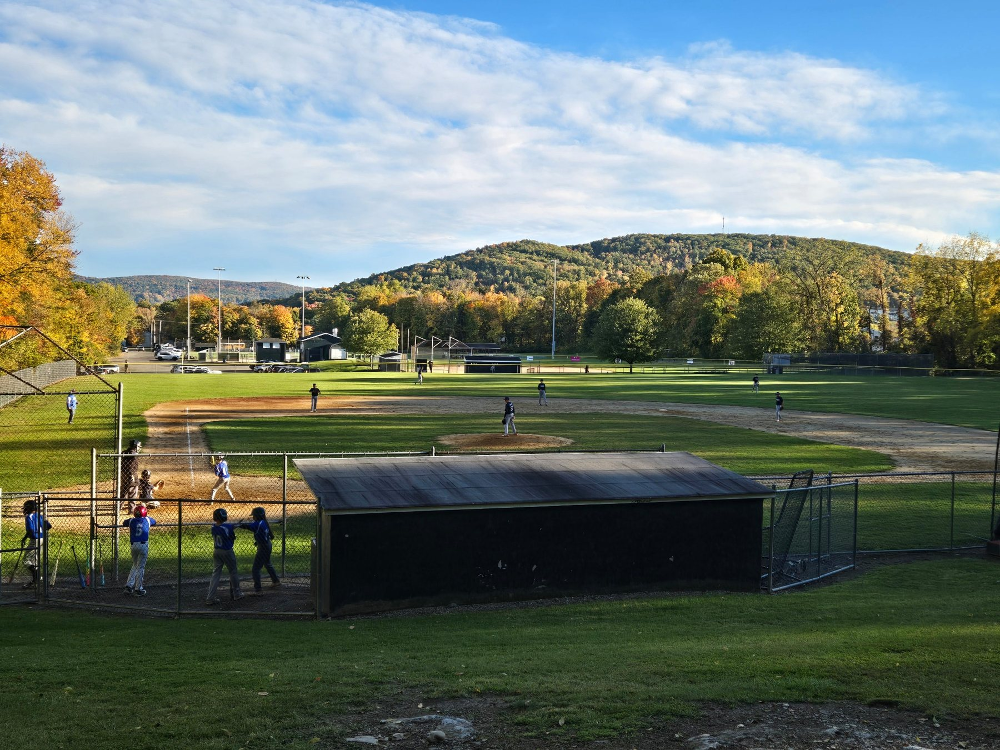
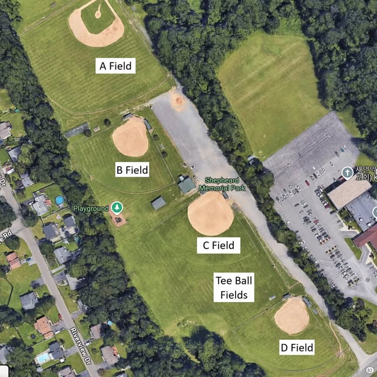
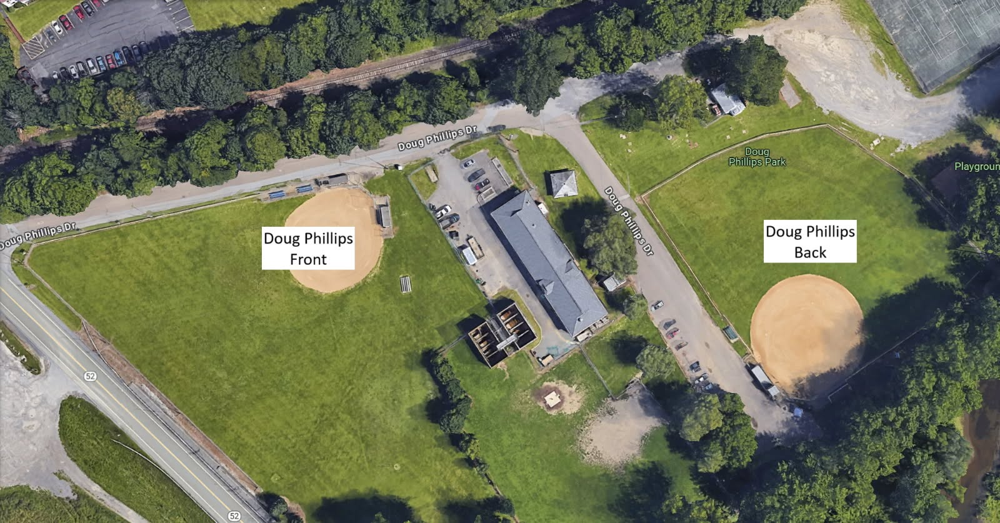

Robert G. Shepheard Memorial Park


99 NY-82
Fishkill, NY 12524
Shepheard Memorial Park serves as the primary home of Fishkill Little League and hosts baseball and softball programs throughout the season.
Directions to Shepheard Memorial ParkDoug Phillips Park
26 Doug Phillips Drive
Brinckerhoff, NY
Additional games, events and practices may be scheduled at Doug Phillips Park throughout the season.
Directions to Doug Phillips Park